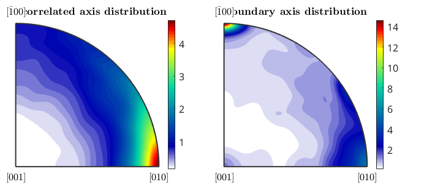

Misorientation Analysis
How to analyze misorientations.
| On this page ... |
| Definition |
| The sample data set |
| Intragranular misorientations |
| Boundary misorientations |
| The angle distribution |
| The axis distribution |
Definition
In MTEX the misorientation between two orientations o1, o2 is defined as

In the case of EBSD data, intragranular misorientations, misorientations between neighbouring grains, and misorientations between random measurements are of interest.
The sample data set
Let us first import some EBSD data by a script file
mtexdata forsterite
plotx2eastand reconstruct grains by
% perform grain segmentation [grains,ebsd.grainId,ebsd.mis2mean] = calcGrains(ebsd('indexed'),'threshold',5*degree);
Intragranular misorientations
The intragranular misorientation is automatically computed while reconstructing the grain structure. It is stored as the property mis2mean within the ebsd variable and can be accessed by
% get the misorientations to mean mori = ebsd('Fo').mis2mean % plot a histogram of the misorientation angles plotAngleDistribution(mori) xlabel('Misorientation angles in degree')
mori = misorientation size: 152345 x 1 crystal symmetry : Forsterite (mmm) crystal symmetry : Forsterite (mmm)

The visualization of the misorientation angle can be done by
close all plot(ebsd('Forsterite'),ebsd('Forsterite').mis2mean.angle./degree) mtexColorMap WhiteJet mtexColorbar hold on plot(grains.boundary,'edgecolor','k','linewidth',.5) hold off

In order to visualize the misorientation by an ipdf colorcoding, we first define an orientation to colormapping and set the colorStretching to increase the contrast around the white center. Note that the inversPoleFigureDirection of the ipdf map is automatically set to the white center to colorize grains with a small texture gradient with light colors.
oM = ipdfHSVOrientationMapping(mori)
oM.colorStretching = 5;
plot(oM,'noTitle')oM =
ipdfHSVOrientationMapping with properties:
inversePoleFigureDirection: [1×1 Miller]
CS1: [4×2 crystalSymmetry]
CS2: [4×2 crystalSymmetry]
antipodal: 0
colorPostRotation: [1×1 rotation]
colorStretching: 1
whiteCenter: [1×1 vector3d]
grayValue: [0.2000 0.5000]
grayGradient: 0.5000
maxAngle: Inf
sR: [1×1 sphericalRegion]
refl: []
rot: [1×1 rotation]
alpha: 0

plot(ebsd('Forsterite'),oM.orientation2color(ebsd('Forsterite').mis2mean)) hold on plot(grains.boundary,'edgecolor','k','linewidth',.5) hold off

Boundary misorientations
The misorientation between adjacent grains can be computed by the command grainBoundary.misorientation.html
plot(grains) hold on bnd_FoFo = grains.boundary('Fo','Fo') plot(bnd_FoFo,'linecolor','r') hold off bnd_FoFo.misorientation
bnd_FoFo = grainBoundary
Segments mineral 1 mineral 2
17774 Forsterite Forsterite
ans = misorientation
size: 17774 x 1
crystal symmetry : Forsterite (mmm)
crystal symmetry : Forsterite (mmm)
antipodal: true

plot(ebsd,'facealpha',0.5) hold on plot(grains.boundary) plot(bnd_FoFo,bnd_FoFo.misorientation.angle./degree,'linewidth',2) mtexColorMap blue2red mtexColorbar hold off

In order to visualize the misorientation between any two adjacent grains, there are two possibilities in MTEX.
- plot the angle distribution for all phase combinations
- plot the axis distribution for all phase combinations
The angle distribution
The following commands plot the angle distributions of all phase transitions from Forsterite to any other phase.
plotAngleDistribution(grains.boundary('Fo','Fo').misorientation,... 'DisplayName','Forsterite-Forsterite') hold on plotAngleDistribution(grains.boundary('Fo','En').misorientation,... 'DisplayName','Forsterite-Enstatite') plotAngleDistribution(grains.boundary('Fo','Di').misorientation,... 'DisplayName','Forsterite-Diopside') hold off legend('show','Location','northwest')

The above angle distributions can be compared with the uncorrelated misorientation angle distributions. This is done by
% compute uncorrelated misorientations mori = calcMisorientation(ebsd('Fo'),ebsd('Fo')); % plot the angle distribution plotAngleDistribution(mori,'DisplayName','Forsterite-Forsterite') hold on mori = calcMisorientation(ebsd('Fo'),ebsd('En')); plotAngleDistribution(mori,'DisplayName','Forsterite-Enstatite') mori = calcMisorientation(ebsd('Fo'),ebsd('Di')); plotAngleDistribution(mori,'DisplayName','Forsterite-Diopside') hold off legend('show','Location','northwest')

Another possibility is to compute an uncorrelated angle distribution from EBSD data by taking only into account those pairs of measurements that are sufficiently far from each other (uncorrelated points). The uncorrelated angle distribution is plotted by
% compute the Forsterite ODF odf_Fo = calcODF(ebsd('Fo').orientations,'Fourier') % compute the uncorrelated Forsterite to Forsterite MDF mdf_Fo_Fo = calcMDF(odf_Fo,odf_Fo) % plot the uncorrelated angle distribution hold on plotAngleDistribution(mdf_Fo_Fo,'DisplayName','Forsterite-Forsterite') hold off legend('-dynamicLegend','Location','northwest') % update legend
odf_Fo = ODF
crystal symmetry : Forsterite (mmm)
specimen symmetry: 1
Harmonic portion:
degree: 28
weight: 1
mdf_Fo_Fo = MDF
crystal symmetry : Forsterite (mmm)
crystal symmetry : Forsterite (mmm)
Harmonic portion:
degree: 20
weight: 1

What we have plotted above is the uncorrelated misorientation angle distribution for the Forsterite ODF. We can compare it to the uncorrelated misorientation angle distribution of the uniform ODF by
hold on plotAngleDistribution(odf_Fo.CS,odf_Fo.CS,'DisplayName','untextured') hold off legend('-dynamicLegend','Location','northwest') % update legend

The axis distribution
Let's start here with the uncorrelated axis distribution, which depends only on the underlying ODFs.
close all mtexFig = newMtexFigure; mori = calcMisorientation(ebsd('Fo')); plotAxisDistribution(mori,'smooth','parent',mtexFig.gca) mtexTitle('uncorrelated axis distribution') mtexFig.drawNow('figSize','normal')
ans =
Text (\bf{uncorrelated axis distribution}) with properties:
String: '\bf{uncorrelated axis distribution}'
FontSize: 13
FontWeight: 'bold'
FontName: 'Helvetica'
Color: [0 0 0]
HorizontalAlignment: 'center'
Position: [1.4965e-06 1.4621 0]
Units: 'data'
Use GET to show all properties

We may plot the axes of the boundary misorientations directly into this plot
mtexFig.nextAxis plotAxisDistribution(bnd_FoFo.misorientation,'smooth','parent',mtexFig.gca) mtexTitle('boundary axis distribution') mtexColorbar
ans =
Text (\bf{boundary axis distribution}) with properties:
String: '\bf{boundary axis distribution}'
FontSize: 13
FontWeight: 'bold'
FontName: 'Helvetica'
Color: [0 0 0]
HorizontalAlignment: 'center'
Position: [0.7071 1.4621 -1.4211e-14]
Units: 'data'
Use GET to show all properties
 This shows a much stronger preference of the (1,1,1) axis in comparison to the uncorrelated distribution.
| DocHelp 0.1 beta |